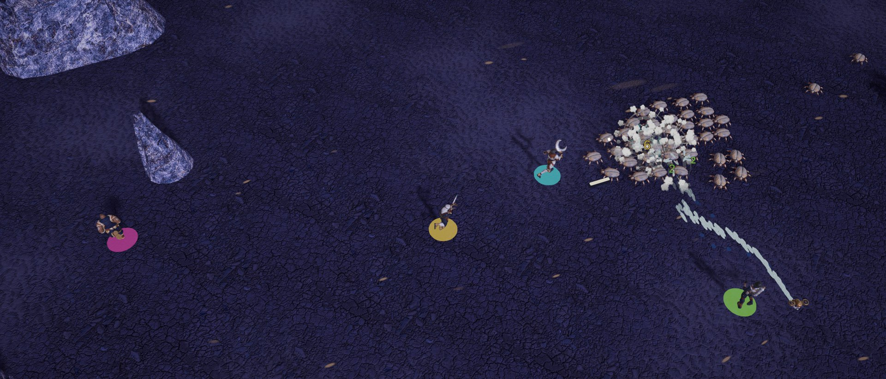
Design case study
Wormwake
A top-down co-op survival game for 1–4 players, set on Saltmere, a desert planet where colossal Maws surface through the sand. Hold a harvest site against escalating swarms, collect gleam in the Maws' wake, and level up as a team.
- The game
- A top-down co-op survival game for 1–4 players, set on Saltmere, a desert planet where colossal Maws surface through the sand.
- My role
- Solo creator and art director. I set the design rules, judged and corrected every AI-generated model, image, sound and song, and directed AI coding agents to build it in Unity 6.
- The thesis
- Every visual decision is a ruling a test can check.
- Game design
- Art direction
- UI/UX
- Game feel
- AI-output curation
Judging AI output: keep, cut or rebuild
Almost every asset started as AI output: Meshy 3D models, generated 2D art, music and sound. None of it went in as generated. Each piece got a verdict against the game's rules.
The Maw: concept to model
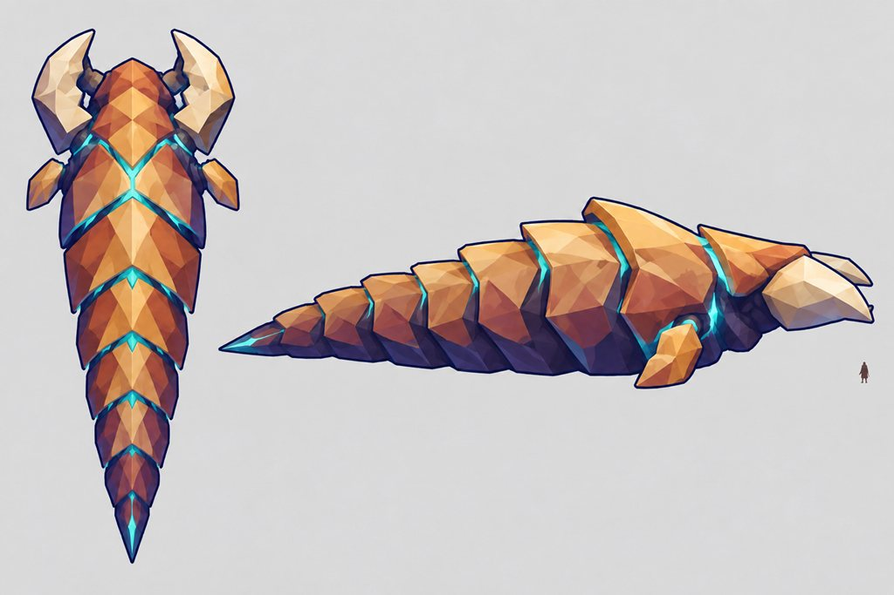
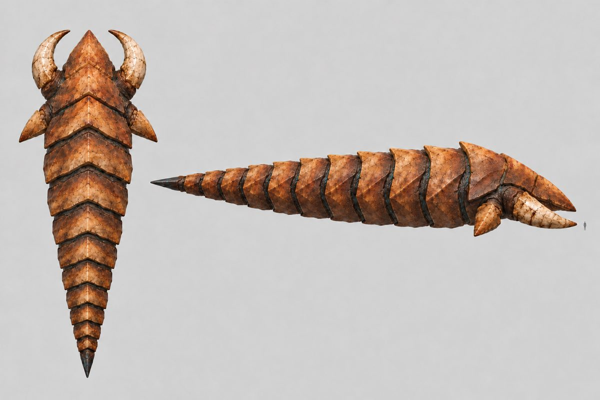
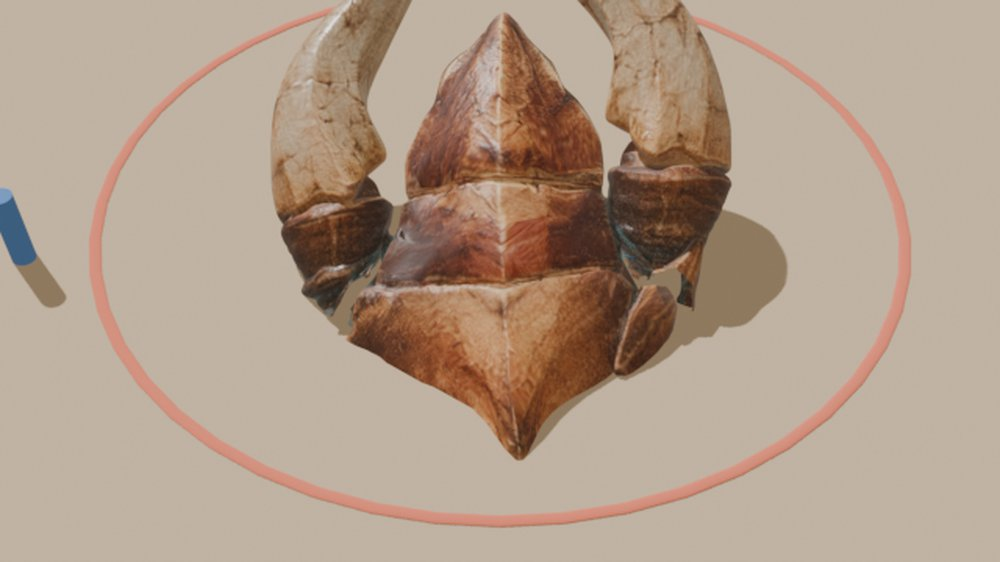
The Maw's eruption
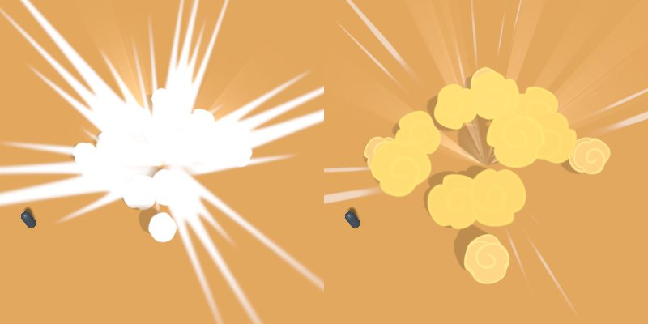
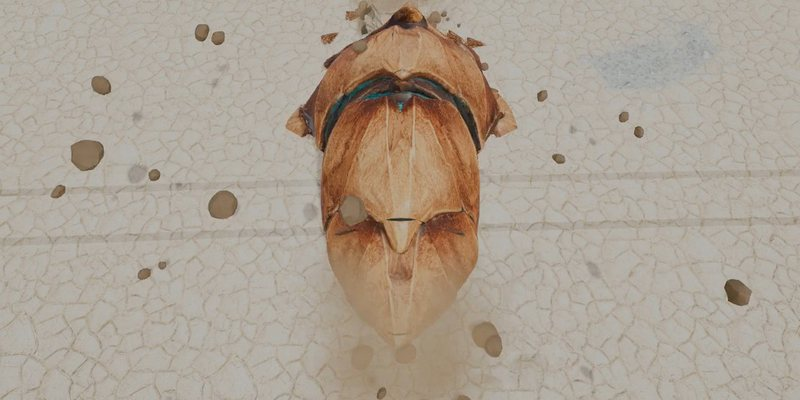
Stage concept art
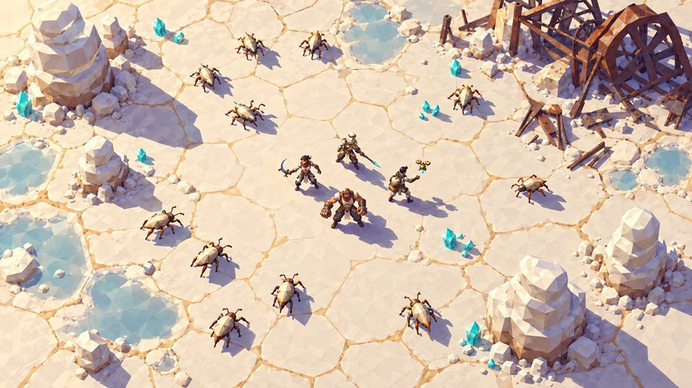
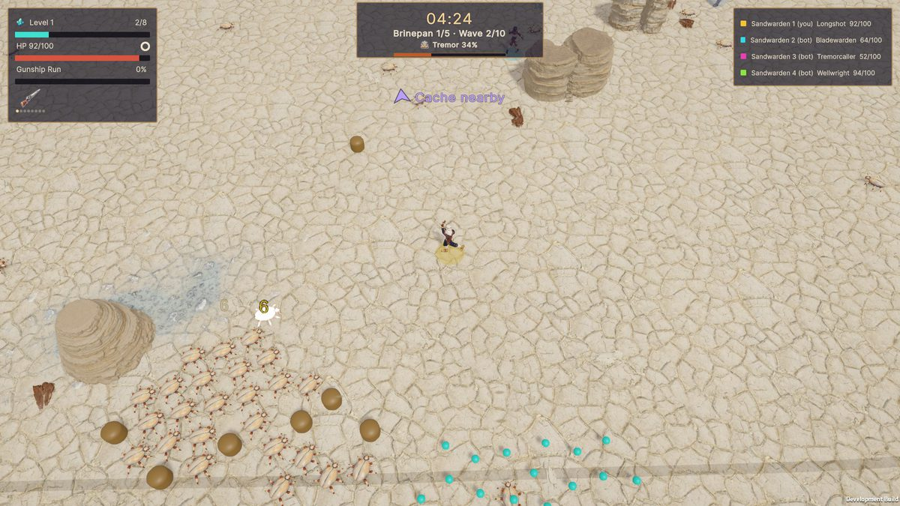
The Ground Slam
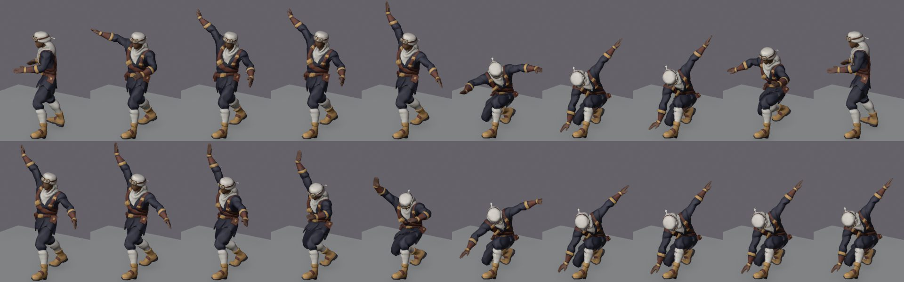
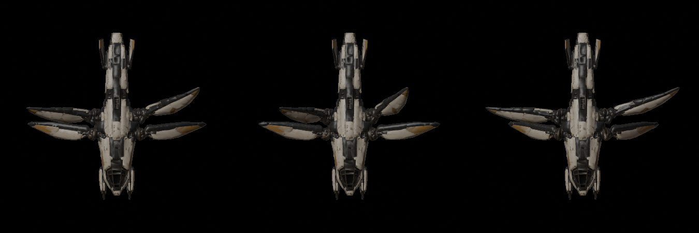
More calls
Backpedal animation
Meshy's walk-backward had its travel baked into the hips: it clipped, lagged, and at speed read as a frantic shuffle. Replaced with a forward run played backwards. The fault only shows in motion, so it has no still pair here.
A stage emblem
Rustgate's concept carried a banner emblem that read as a crypto logo, so the game uses a plain shape. The rejected emblem survives only in that concept image.
Icons
28 generated icons reviewed as silhouettes at 34 and 64 px; palettes moved to the color owners, a beam shortened to fit its frame.
The big call: low-poly to realistic
The game first had flat-shaded low-poly art. Watching it in motion, I judged the flat shading and empty ground to be the problem, not the models. I moved the 3D world to PBR with 2K textures (4K for the ground) and kept the 2D UI stylized on purpose. A day later I retired every code-built low-poly prop, because next to the textured models they broke the look.
Readable chaos, made measurable
With 150 enemies, four players and their effects on screen, "does it read?" can't be judged once by eye. I turned it into rules a test can check on every change.
Moving the stages to realistic textures made every new texture or effect a chance to bury the one thing a player must see: the gleam they're fighting for. So the look became a set of rulings with numbers behind them.
- Gleam (XP) only
- Danger only
- The team's strikes
- Players
- Every color has one owner.Cyan-teal means gleam and nothing else. Warm orange on the ground means danger. No stage ground uses a player color, water blue or the ward color.
- Contrast is a gate, not a feeling.Gleam sits at least 30 ΔE from the ground around it, and a teammate's marker at least 10, checked on 20 shots: 5 stages × start, middle, edge and first ground mark.
- Effects get their own distances.At least 30 ΔE from gleam, 20 from danger telegraphs, 15 from player colors. Purchased VFX get repainted until they pass.
- What looks solid is solid.Anything taller than 0.5 m stands on collision. Walls are capped at 3.5 m because 5 m hid about 3.5 m of ground behind each one from the 55° camera.
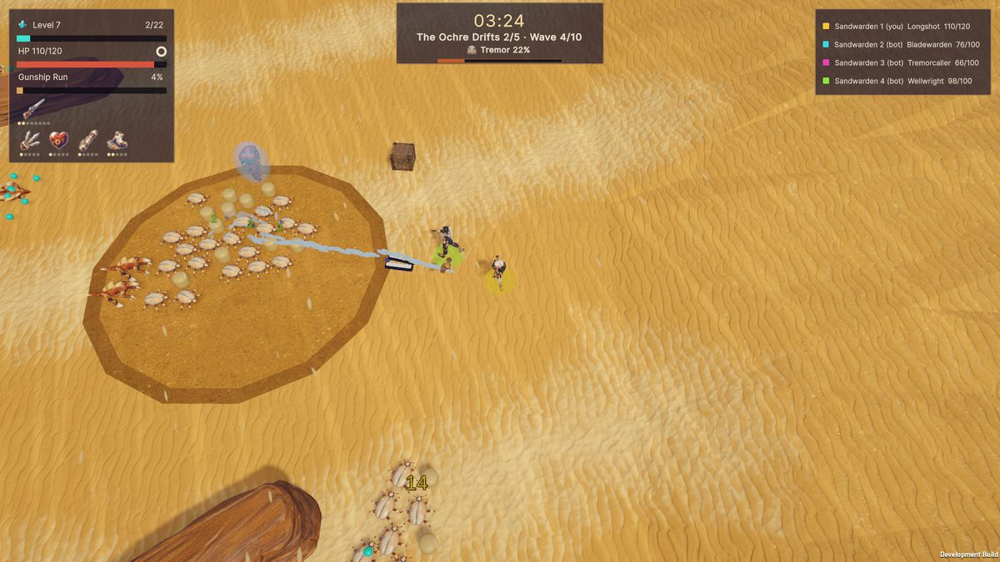
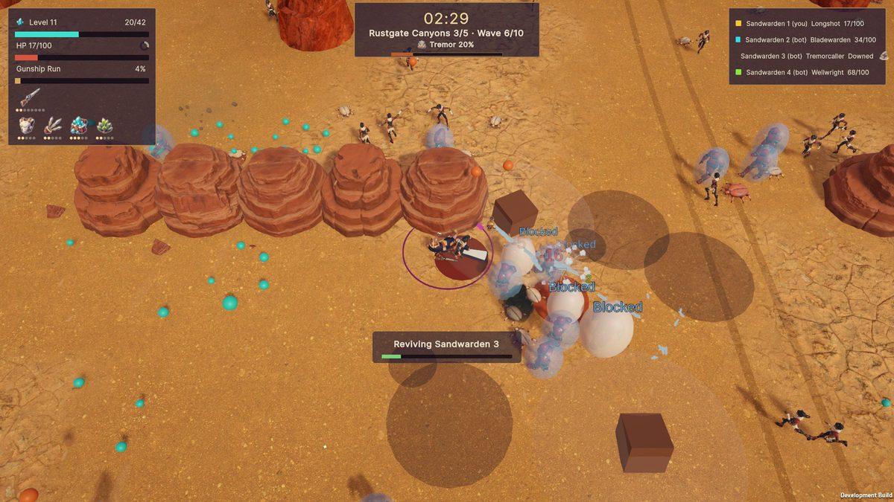
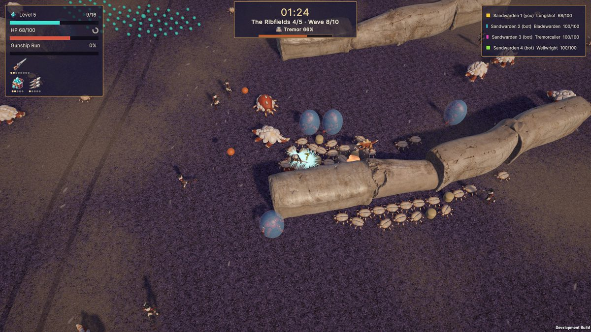
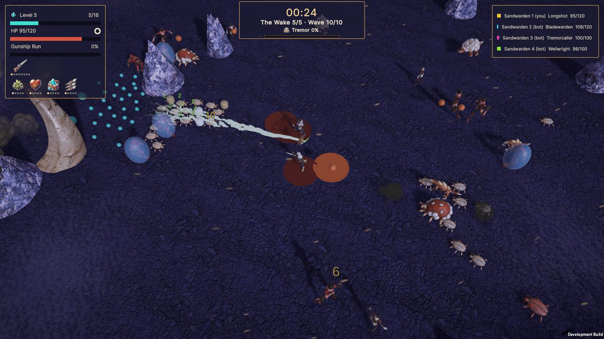
The numbers, measured on today's build
| Stage | Gleam ΔE (gate 30) | Marker ΔE (gate 10) | What it took |
|---|---|---|---|
| Brinepan | 37.3–38.9 | 16.6–17.6 | Started at 20.5, failing. Salt darkened a step (#D6CCB8); the paler tone only on plate tops. |
| Ochre Drifts | 50.1–56.8 | 13.3–20.1 | Soft sand darkened and given a dark rim, so the slow zone reads without a new color. |
| Rustgate Canyons | 63.8–67.4 | 10.2–23.0 | The tightest marker margin in the game, at a ground mark. |
| Ribfields | 50.0–57.8 | 48.2–52.0 | Dark grit makes every signal pop. |
| The Wake | 50.1–58.3 | 46.4–51.2 | Ground moved to dark glass, because a squall over violet-gray "barely showed". |
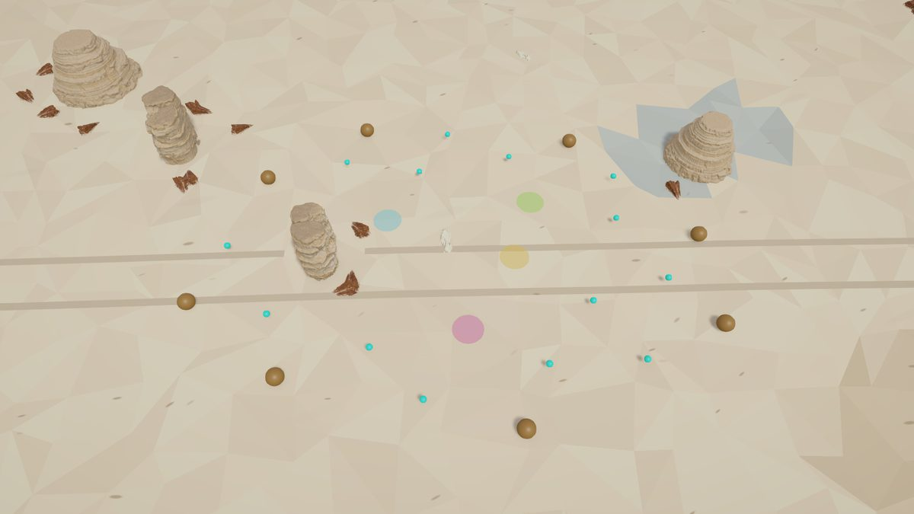
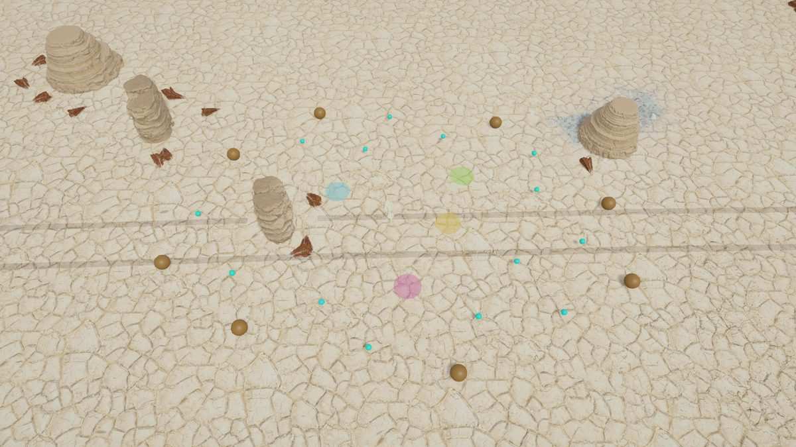
A ruling in full: jade over orange
The team's strikes needed a color. Flare orange was the obvious pick, but it matched the rockfall warning ring. I chose jade instead, because its nearest colors are all friendly (gleam, healing, player 4), so a misread still leads somewhere good.
Blink rates are kept apart for the same reason: rockfall at 2.5 Hz, glass squalls at 3 Hz, the team's dome at 1.6 Hz.
Accessibility, checked
- Contrast.Gleam at least 30 ΔE from the ground around it and teammate markers at least 10, on all 20 test shots (the table above); effects at least 30 from gleam, 20 from danger and 15 from player colors.
- Readability.28 icons reviewed as silhouettes at 34 and 64 px. Damage numbers are too small at 1080p; scaling them with resolution is the fix named in the self-critique.
- Target size.The revive target is a wide ring on the ground, not a button to hit, and Pick-then-Buy splits spending into two clicks so a stray one can't spend.
- Information architecture.The five revive cues each answer one question: who is down, where, how long, am I reviving, did it work.
Game feel, tuned by hand
Co-op players share one clock, so there's no hit-stop and the pause menu never pauses. Every bit of impact has to come from animation, light and sound.
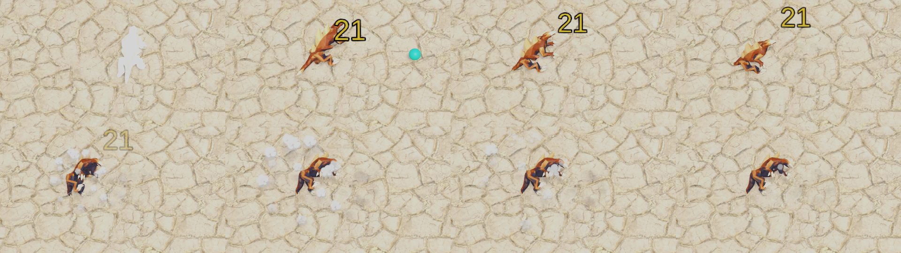
Aiming that reads at a glance
Every character always faces its player's cursor, not just while attacking, so you can read the whole team's aim at a glance. Firing calls the Maw (through the Tremor meter) only when an enemy is in reach, so shooting at empty sand doesn't punish you.
Four effects passes
Weapon identity (the blade as a bone ribbon, the pulse as a sand shockwave), then animation (legs follow movement, backpedal past 110°), then contact (muzzle flash, kick, sparks capped at 4 a frame for performance), then enemies react (wind-up glow, stagger, death sink).
Interface: the revive flow
Playtesting showed a gap: nothing told the team that someone was down, where they were, or that a revive was under way.
Five cues, each answering the one question a player has in that moment:
- Who is down? A banner in their color.
- Where are they? An arrow at the screen edge in their color while they're off screen.
- How long do I have? A timer on their row of the team panel.
- Am I reviving them? A ring under them that fills clockwise while you stand in it.
- Did it work? The ring completes and the banner clears.
What testing caught
Recording the flow frame by frame found three faults that reading the layout never would: the ring was culled from some angles, the HUD was squeezed into a 260 px strip, and the banner clipped its own text.
Pick, then Buy
Spending upgrade currency takes two steps, so a stray click can't spend it. Respeccing asks once more, because rebuilding a tree is tedious.
One vocabulary
Fast and Slow attack tags show on both the level-up choices and the HUD, so the choice and its effect use the same words.
A critique of my own frame
A real mid-run frame, with its open problems.
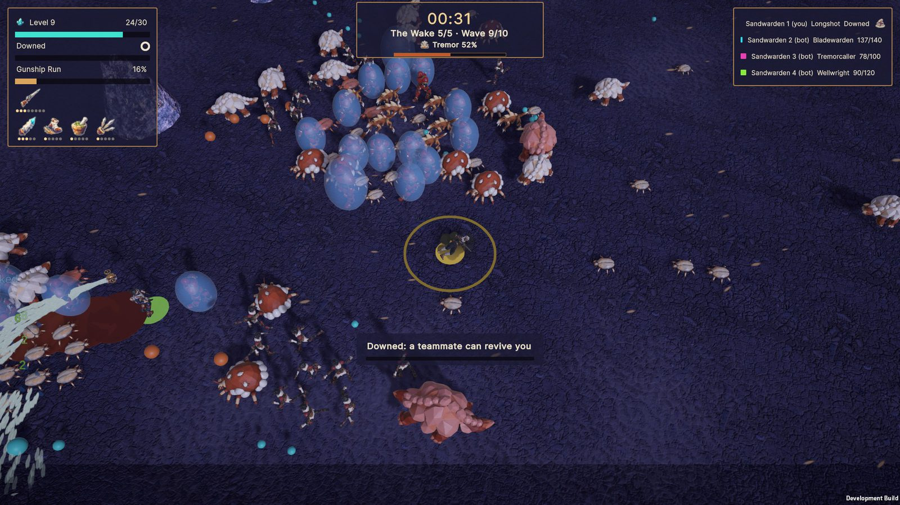
1 2 3 4 5 6What holds
- 1Gleam reads first.Cyan shards are the most saturated thing on the dark glass, 50+ ΔE clear, so the eye goes to the reward.
- 2Danger is warm, the team is cool.Orange wind-ups and lobs separate from the team's jade and cyan without any outline.
- 3Every player is findable in under a secondthrough their slot-colored ground disc.
What fails, and the fix
- 4The obsidian reads as granite.The glass shards come out speckled lilac, so the stage loses its one idea: a desert fused by heat.Fix: fewer, larger, darker facets with a sharp highlight, less mid-tone noise.
- 5HUD panels go muddy.Semi-transparent brown reads as dirt over bright sand.Fix: a neutral dark panel at higher opacity, or a 1 px light inner edge.
- 6Damage numbers are too smallat 1080p to read in a swarm, so they become noise.Fix: scale with resolution; past ~50 enemies show only crits and kills.